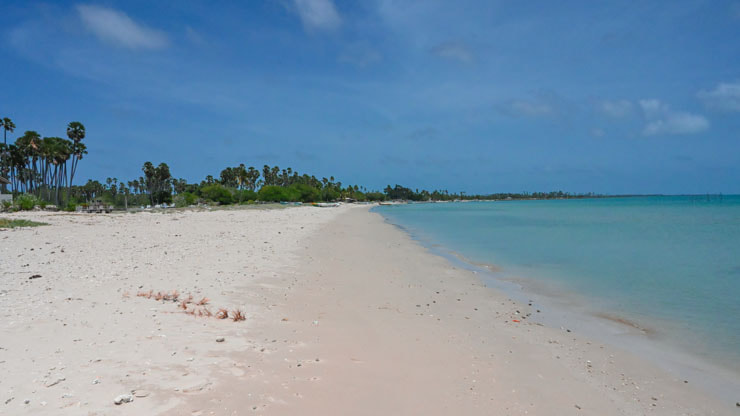
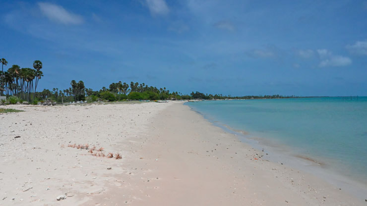
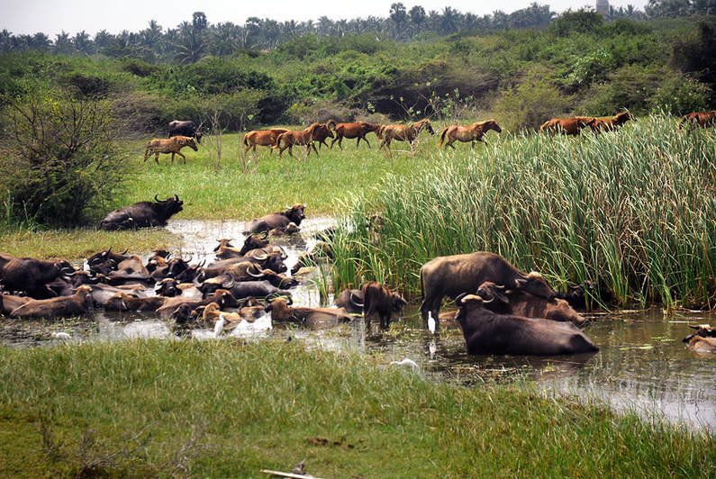
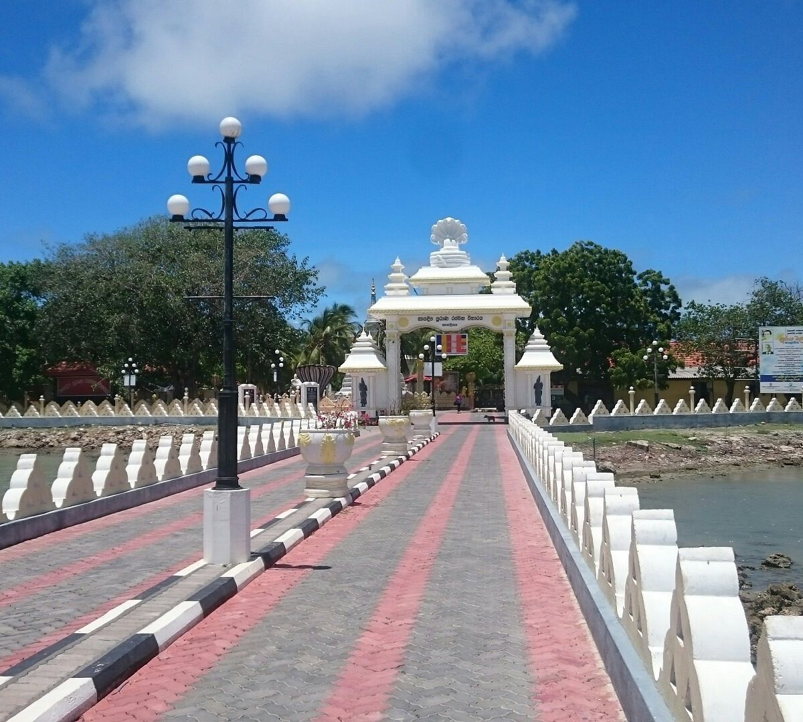
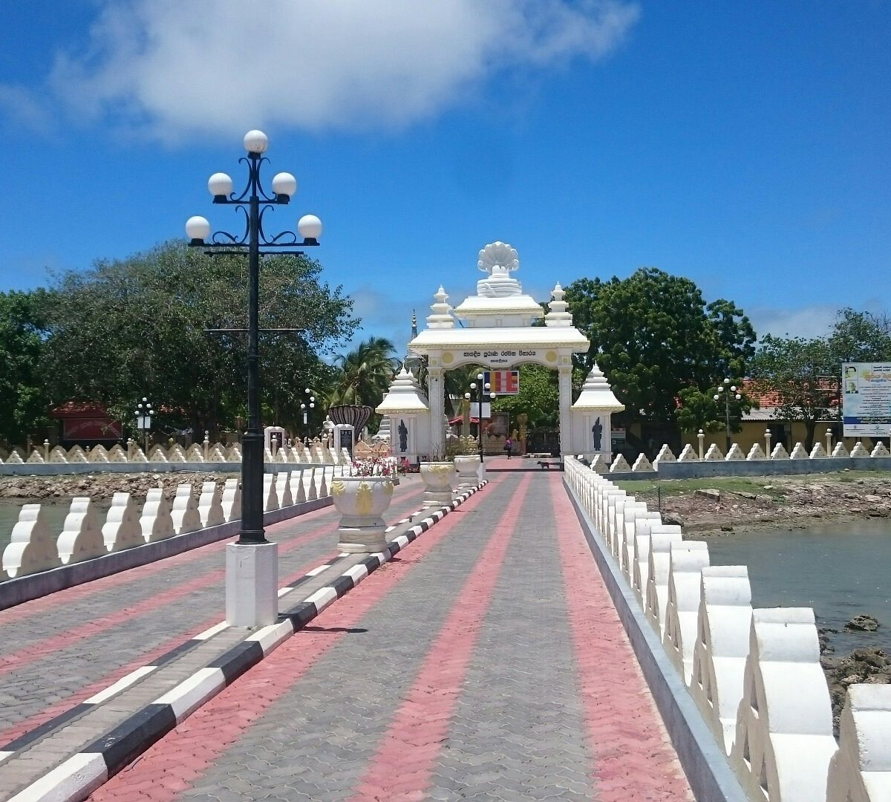

The Northern Province (Tamil: வட மாகாணம் Vaṭa Mākāṇam; Sinhala: උතුරු පළාත Uturu Paḷāta) is one of the nine provinces of Sri Lanka, the first level administrative division of the country. The provinces have existed since the 19th century but did not have any legal status until 1987 when the 13th Amendment to the Constitution of Sri Lanka established provincial councils. Between 1988 and 2006 the province was temporarily merged with the Eastern Province to form the North Eastern Province. The capital of the province is Jaffna. The majority of the Sri Lankan Civil War was played out in this province.
In the hot arid lands of Nallur, in Jaffna, rises the majestic Hindu temple for Skanda/ Murugan – the god of love, war and beauty. It has reigned over the land for centuries, attracting devotees from various walks of life. The temple itself embodies a kind of peace that can only be felt in the most divine of places.
History
The temple was originally founded in 948 AD. However, it reached fame when it was rebuilt in the 13th century by Puvaneka Vaahu, a minister of the Jaffna King Kalinga Maha. The Nallur Kandaswamy Temple was built for a third time by Senpaha Perumal (a.k.a Sapumal Kumaraya) who was the adopted son of the Kotte king. Nallur served as the capital of the kings of Jaffna, and was a highly defensive fort and city. There were courtly buildings, the palaces, businesses and much more.
The third built temple was destroyed by the Portuguese in 1624 AD; and many churches built over the ruins. The location of the original temple is now covered by the St James Church, Nallur. Part of the original Sivalingam from the temple remained in the vicarage, but was destroyed during the recent civil war. Now only the platform where it was mounted remains.
The current temple was built in 1734 AD by Don Juan. However, the ‘Golden Era’ of the Nallur Temple began in the latter 1890s with the takeover of the temple administration by Arumuga Maapaana Mudaliyar; who started renovating it to bring it back to its earlier magnificence.
Design
Created in the ways of the ancient temple cities of Madura and Padaliputra in India; the town of Nallur too revolves around this temple.
The cities had four entrances with temples at each gate.
There were outer circles where the commoners resided and businesses flourished, inner circles where highly placed nobles resided.
The walls of the temple then rose, resembling the towers (in this case kopurams) and palisades of a fort.
Within these walls were the outer courtyard, the holy bathing well (theertha keni), the residences of the priests, the inner temple, and smaller shrines for lesser deities.
The inner temple itself was large; and contained the inner courtyard, the central shrine or mulasthanam, shrines for other major gods and goddesses, the dance hall, the conference hall, and many other such elements.
While the original Nallur Kandaswamy Temple was on this same grand scale; the current temple is on a much smaller scale when considering area, whilst still being one of the largest and historically accurate temples still existing in Sri Lanka. The temple has four kopurams, a rarity nowadays; including a massive golden-ochre Rajakopuram standing approximately seven stories (22-25m) tall. Some of the kopurams were built within the last decade. The inner and outer circles usually function as normal roads; except during the temple’s elaborate festival. With beautiful sculptures and architecture created by architects brought in from India; the temple is a visual delight that is best seen directly.
Guidelines on visiting the Nallur Kandaswmy Temple.
The temple has a large courtyard; don’t forget remove your shoes and wash your feet at the outer well before you enter.
You bring items such as flowers, fruits, camphor and such to offer to the shrines. These can be bought from shops opposite the temple; but everything except camphor and incense must be washed outside before offering.
Men are not allowed to wear any other garments above waist level within the temple, as has been the Hindu custom from ancient days. Women are encouraged to wear clothing which is non-revealing and below knee length.
No photography is allowed within the temple; and mobile phones must be switched off to prevent disturbing other devotees.
The tickets for the poojas are sold at a mere Rs 1.00, and have been so for decades. You can buy some tickets and offer them to the priests at the shrines to observe the colorful poojas with the ancient mantras.
While worshipping put your palms together and hold it at chest height.
Worshipping Nallur – A Virtual Tour
The temple has four entrances, but you will be using the main entrance, which lies directly before the main shrine.
The main shrine will lie before you, within which is the holy spear (vel)which is believed to be an artefact left by the actual God Skanda himself.
You can do worship and do a pooja here; you will be offered holy ash, powdered sandalwood paste and kumkum at the end.
Apply the holy ash on your forehead with the three middle fingers of your right hand. Take some of the ochre sandalwood paste onto your forefinger and press a little circle of it on the center of your forehead. Take some of the red kumkum powder onto the same finger, as it will stick from the moisture of the paste, and press on a smaller circle on top of the sandalwood circle.
The temple is frequented by worshippers of many races and religions, who you will be able to see.
From the main shrine; you will be travelling clockwise along the walkway which goes around the holy bathing well within the temple. The well is used to bathe the figurines of the gods and goddesses.
You will walk behind the main shrine to come up to the dance hall and gathering hall to the left.
The walkway has various shrines, such as Ganesha, Valli, Theivayaanai and Shiva, interspersed along the way. You will be able to worship the shrines, and have poojas if priests are available there; while also marveling at the detailed carvings and architecture. Some have bells outside that you can ring.
After finishing this rotation, you will end up at the main shrine once again, at which point you will get ready to leave the main temple.
Before leaving you can lie face down if you’re male or kneel and touch your head to the ground if you’re female; and pay your final respects the traditional way. Donate some money to the temple’s till if you can, as this will be used for further renovations.
Once you step outside, go towards the left towards the tall shed-like metal structure you see. This houses the chariot, which is only used during the festival. Walk around it clockwise to finish worshipping the temple properly
Along the way around the chariot, note the short twisted tree on the far side; which was once the meditation place of the deceased saint Yoga Swami.
Nallur Kandaswamy Temple Festival
If you arrived during late August, you will be lucky enough to see the temple’s famous 25-day festival. This famous and colorful festival is viewed by tens of thousands of people from around the world.
The special occasions during the festival that are not to be missed are the Manjam, Kailasavahanam, Vellivimanam, Thandayuthepani Utsavam, Sapparam, the most important Ther Thiruvila (chariot festival), Theertham (water cutting festival), and the Thirukalyanam (the holy wedding). However, the entire festival is a complex affair which causes the entire town to enter a festive mood.
Another popular event which you may get to see is Thirukkarthikai, which occurs during mid-November. This is also highly attended and has much to view.
The Nallur Kandaswamy temple is an important relic of Sri Lanka, which has been praised in many ancient texts from around the world. As such a visit is a must to properly understand the glory of ancient Hindu Temples.
 
Delft island is an Island in the Palk Strait, northern Sri Lanka. This island is named as Delft in the Admiralty Chart unlike the other islands, whose names are Tamil. The island's area is 50 km² and it is roughly oval-shaped. Its length is 8 km and its maximum width about 6 km. Delft Islands flat grounds adds to the beauty of its breath taking views.
Mannar Island - Sri Lanka's natural bridge to India "Mannar" is the name of a city and and island and a district in Sri Lanka‘s Northern Province. Mannar District, covering 2000 square kilometers, is much larger than the Island of Mannars, which is 30 km long and up to 6 km wide, covering only 130 square kilometers. Distance from Colombo to Mannar Island ist 220 km, as the crow flies.
Mannar Island is linked to the main island of Sri Lanka by a causeway. This 3.5 km long dam is crossed by the A14 highway which starts as a trunk road of A9 highway in Medawachchiya 20 km to the north of Mihintale. A trunk railway line started from Medawachchiya, too. It was severely damaged during the civil war, but will be renovated within the near future. The first segment leading to Madhu was reopened in 2013.
"Mannar" is the name of a city and and island and a district in Sri Lanka‘s Northern Province. Mannar District, covering 2000 square kilometers, is much larger than the Island of Mannars, which is 30 km long and up to 6 km wide, covering only 130 square kilometers. Distance from Colombo to Mannar Island ist 220 km, as the crow flies.
Mannar Island is linked to the main island of Sri Lanka by a causeway. This 3.5 km long dam is crossed by the A14 highway which starts as a trunk road of A9 highway in Medawachchiya 20 km to the north of Mihintale. A trunk railway line started from Medawachchiya, too. It was severely damaged during the civil war, but will be renovated within the near future. The first segment leading to Madhu was reopened in 2013.
FERAL HORSES ON MANNAR ISLAND

Apart from Delft Island, Mannar Island is the only place in Sri Lanka where you can observe freely roaming horses. The best place to spot feral horses is Mannar Island's only rich wetland. Apart from wild living horses and donkeys, plenty of birds - including seasonal flocks of Flamingos - are attracted by the freshwater of the tiny Korakulum wetland. Fishing cat, a rare species, has been observed in this wetland area, too.
MANNAR CITY AND DUTCH FORT In ancient times, Mannar was renowned for pearl fishing. Pearls, besides gems and spices, were the main export articles of southern India and Sri Lanka during the heydays of the Roman Empire. Instead of natural goods, Roman silver and gold coins were received in exchange. Mannar is mentioned in the „Periplus of the Erythraean Sea“, which was a report about the Indian Ocean harbours composed by an anonymous author, who had travelled to India.The Portuguese built Mannar Fort in 1560. It‘s situated close to the westernmost point of the island, facing the mainland in order to protect the narrow strait. Mannar Fort surrendered to the Dutch on 22 February 1658, 2 years after the fall of Colombo Fort. In 1996, the Dutch rebuilt and enlarged the fortress. In 1795 they surrendered to the British. Mannar Fort has four bastions. The bastions and ramparts are intact, whereas the other buildings within the fortified area have not been properly maintained. Mannar Fort is currently a base of Sri Lankan security forces.During many years of the two and a half decades of civil war, parts of Mannar were under control of the ruthless rebel army, thousands of Muslims, called „Moors“ in Sri Lanka, were driven out by the LTTE in 1990, though they were native Tamil speakers. The same fate was shared by Muslim and Buddhist minorities in all other parts of rebel-held territory. After the end of LTTE control, particularly after the end of the war, some Muslim families returned to their homes on Mannar Island.Mannar city is crowded with Hindu temples and Muslim mosques. However, most sacred buildings in town are Roman Catholic churches. With more than 40 % of the population, the proportion of Roman Catholic Christians is higher in Mannar District than in any other district of Sri Lanka. For comparrison, the percentage of Catholics in the entire island nation is only 7%. Mannar city is the bishop‘s see of the Mannar diocese. With an estimated 60%, the percentage of Christians in the devisional secretariat of Mannar Island is yet higher than in other parts of Mannar district. There is only one divisonal secretariat with a higher rate (Negombo 65%)Apart from the Dutch Fort, Mannar town is known for its giant Baobab tree. It's called the „Pallimunai Baobab tree“ due to its location in a village of the same name. In Sri Lanka, Mannar Island is the region where most of these trees of African origin grow. Mannar has about 30 Baobab trees, compared to roughly 20 on the main island of Sri Lanka. The Baobab in Pallimunai, situated just 1 km to the northwest of Jaffna Fort, is more famous than any other. With an estimated 600 years, it‘s the island nation‘s oldest and maybe most impressive Baobab tree. There are only two other Baobab trees of comparable size in Sri Lanka, namely on the island of Delft and in the wetlands close to at the seashores to the north of Puttalam.
In ancient times, Mannar was renowned for pearl fishing. Pearls, besides gems and spices, were the main export articles of southern India and Sri Lanka during the heydays of the Roman Empire. Instead of natural goods, Roman silver and gold coins were received in exchange. Mannar is mentioned in the „Periplus of the Erythraean Sea“, which was a report about the Indian Ocean harbours composed by an anonymous author, who had travelled to India.The Portuguese built Mannar Fort in 1560. It‘s situated close to the westernmost point of the island, facing the mainland in order to protect the narrow strait. Mannar Fort surrendered to the Dutch on 22 February 1658, 2 years after the fall of Colombo Fort. In 1996, the Dutch rebuilt and enlarged the fortress. In 1795 they surrendered to the British. Mannar Fort has four bastions. The bastions and ramparts are intact, whereas the other buildings within the fortified area have not been properly maintained. Mannar Fort is currently a base of Sri Lankan security forces.During many years of the two and a half decades of civil war, parts of Mannar were under control of the ruthless rebel army, thousands of Muslims, called „Moors“ in Sri Lanka, were driven out by the LTTE in 1990, though they were native Tamil speakers. The same fate was shared by Muslim and Buddhist minorities in all other parts of rebel-held territory. After the end of LTTE control, particularly after the end of the war, some Muslim families returned to their homes on Mannar Island.Mannar city is crowded with Hindu temples and Muslim mosques. However, most sacred buildings in town are Roman Catholic churches. With more than 40 % of the population, the proportion of Roman Catholic Christians is higher in Mannar District than in any other district of Sri Lanka. For comparrison, the percentage of Catholics in the entire island nation is only 7%. Mannar city is the bishop‘s see of the Mannar diocese. With an estimated 60%, the percentage of Christians in the devisional secretariat of Mannar Island is yet higher than in other parts of Mannar district. There is only one divisonal secretariat with a higher rate (Negombo 65%)Apart from the Dutch Fort, Mannar town is known for its giant Baobab tree. It's called the „Pallimunai Baobab tree“ due to its location in a village of the same name. In Sri Lanka, Mannar Island is the region where most of these trees of African origin grow. Mannar has about 30 Baobab trees, compared to roughly 20 on the main island of Sri Lanka. The Baobab in Pallimunai, situated just 1 km to the northwest of Jaffna Fort, is more famous than any other. With an estimated 600 years, it‘s the island nation‘s oldest and maybe most impressive Baobab tree. There are only two other Baobab trees of comparable size in Sri Lanka, namely on the island of Delft and in the wetlands close to at the seashores to the north of Puttalam.
 


Nagadeepa Purana Vihara (Sinhala: නාගදීප පුරාණ විහාරය, Tamil: நயினாதீவு நாக விகாரை) is an ancient Buddhist temple situated in Jaffna district of Northern Province, Sri Lanka. It is among the country's sixteen holiest Buddhist shrines (Solosmasthana).According to contemporary history, the Gautama Buddha visited the site after five years of attaining Enlightenment to settle the dispute between two warring Naga kings, Chulodara and Mahodara.Ancient history according to the Mahavamsa chronicles and the Tamil Buddhist epic Manimekalai mentions a gem-studded throne and a stone with the Buddha’s footprint at the island Nainativu, (also known as Nagadeepa) which pilgrims from India visited.